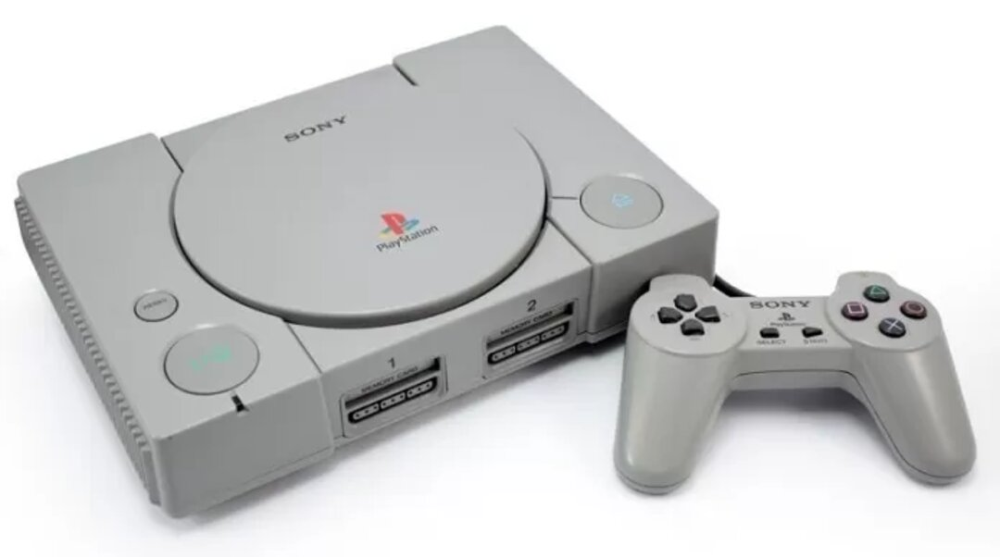
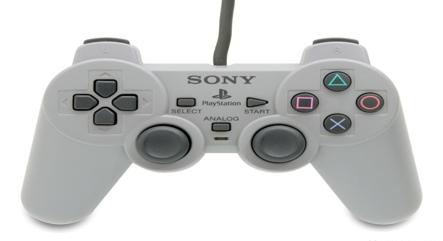
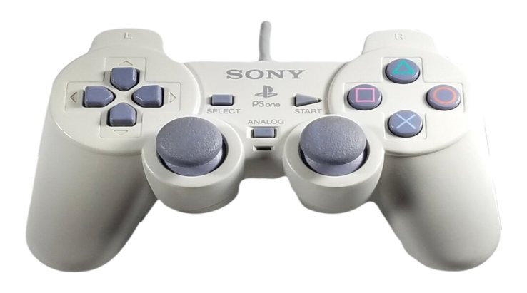
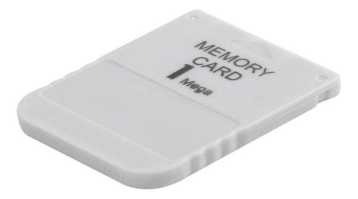
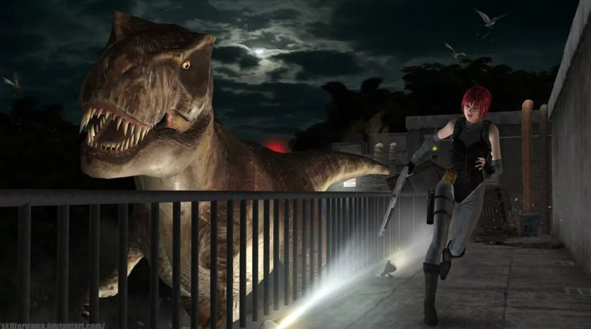

Após o fim da parceria com a Nintendo, a Sony obviamente ainda tinha a intenção de tornar-se um nome forte na indústria dos videogames. Com a intenção de permanecer neste mercado, a empresa chegou a ensaiar outra parceria com um grande nome da época: Sega.
Sony e Sega (da América) estavam de acordo sobre produzir um novo console juntas. Os prejuízos com o console seriam divididos entre as duas empresas, assim como cada uma ficaria com que ganhassem com o software. Porém, Hayao Nakayama, presidente da Sega (matriz), não permitiu que o projeto fosse realmente realizado. Na época, Nakayama afirmou que a ideia era estúpida, além de garantir que a Sony não sabia desenvolver Software nem Hardware. O problema para Nakayama, é que ele não imaginava que pouco tempo depois um console da Sony iria "bater" sem piedade em Saturn, console que veio a ser lançado pela Sega.
A chegada do Sony Playstation

O Sony PlayStation, conhecido no Brasil como o querido Play 1, foi lançado no Japão no dia 3 de dezembro de 1994, chegando aos mercados poucos dias após o lançamento do Sega Saturn. Com a popularidade de alguns jogos já conhecidos e o nome da Sega, o Saturn conseguiu estrear com algum sucesso e teve um lançamento badalado, porém a situação mudaria.
O PlayStation chegou ao mercado com um preço um pouco menor e sustentado pelo grande nome da Sony. O console também exibia um design considerado elegante, além de utilizar melhor as possibilidades do CD. Na época de lançamento do primeiro console da Sony, os CD's foram considerados uma grande inovação e conquistaram o mundo, permitindo que incríveis animações pudessem ser renderizadas e oferecendo ótimos sons que eram novidade. Com a Sega percebendo que seu console seria batido pelo novo rival, o lançamento de Saturn nos Estados Unidos foi adiantado, porém a estratégia não funcionou. O PlayStation chegou ao país com um preço mais acessível e um bom catálogo de jogos, vendendo em poucos dias mais do que o Saturn havia conseguido em 5 meses.
Controles Playstation
Hoje em dia, todos já conhecem o DualSense, o mais novo controle da Sony, porém no passado a empresa apresentou três versões de controle diferentes até chegar ao que considerava ideal para seu console.
O controle do PlayStation (modelo SCPH-1010) foi o primeiro gamepad oferecido pela Sony e chegou junto com o querido PSOne. Projetado por Teiyu Goto e inspirado no controle de SNES, o periférico contava com alças para melhorar a ergonomia, além de apresentar outras características próprias como os botões que não eram definidos por letras, mas sim por símbolos. Optando por não seguir o mesmo caminho dos concorrentes, Teiyu Goto resolveu dar algo de novo para os botões do controle do console da Sony. Com a missão de criar uma identidade visual para o periférico, Goto sabia que era uma grande oportunidade e queria deixar sua marca.
A ideia mais "filosófica" de Teiyu Goto realmente funcionou, já que até hoje os botões seguem este padrão. Afinal, são muitos os jogos em que o triângulo muda a câmera e o quadrado serve para coletar itens, não é mesmo? As funções de X e redondo também são mantidas até hoje, provando que Goto cumpriu sua missão e deixou sua marca!
Dual Analog e Dualkshock
Apesar do primeiro controle PlayStation ter sido interessante, a Sony sentiu a necessidade de lançar uma versão inovadora em 1997, colocando o Dual Analog no mercado. A diferença deste periférico eram as alavancas analógicas, que poderiam ser ligadas com um toque em um novo botão que ficava centralizado entre ambas.

O Dual Analog permaneceu apenas um ano no mercado, antes de ser sucedido pelo DualShock, que viria a ser uma marca registrada e acompanhar a Sony por diferentes gerações. O DualShock chegou com a inovação causada pela sua vibração de acordo com o que acontecia nos jogos. Isto era permitido graças ao dois motores vibratórios, um causando uma sensação mais fraca e o outro oferecendo algo mais forte.

Muitos jogos foram lançados com suporte aos recursos de vibração e alavancas analógicas, assim como outros títulos foram relançados para aproveitar as novidades do controle, como é o caso do clássico Resident Evil. Em 1999, o jogo Ape Escape foi o primeiro a exigir um DualShock para ser conferido.
Memory Card
Como o PlayStation era um console que rodava jogos por meio de CD's, o produto da Sony exigia a utilização de um Memory Card para que fosse possível gravar o progresso nos jogos.
Embora não tenha sido o primeiro console a utilizar um cartão de memória, já que o Neo Geo, da SNK, já havia feito isso, o PlayStation foi o primeiro a fazer o cartão se destacar. Algo interessante é que o primeiro Memory Card possuía 1Mb de memória (128KB), divididos em 15 blocos. A diferença é absurda comparada aos dias de hoje, mas na época era o suficiente para aproveitar grandes títulos.

Grandes Jogos do Playstation 1
O PSOne contou com diversos títulos de peso, incluindo o começo de inúmeras franquias que se estabeleceram na indústria. Diferente da Nintendo, a Sony permitia que jogos mais violentos com a exibição de sangue fossem lançados em seu console, então assim surgiram franquias como Dino Crisis, Resident Evil e mais. Além disso, a Sony também entregou diversos exclusivos, que com certeza serviram para aumentar ainda mais o sucesso do console, com jogos como Crash Bandicoot, Spyro The Dragon e Gran Turismo sendo lançados. Vale lembrar que Gran Turismo foi um título revolucionário no gênero de corrida, elevando o nível destes jogos.
 Dino crisis foi um dos grandes destaques do PS1
Produção até 2006
Algo interessante é que a produção de jogos do primeiro PlayStation continuou até 2006, encerrando apenas alguns meses antes do lançamento do PlayStation 3. O PSOne recebeu 7.918 jogos e mais de 960.01 milhões de unidades destes títulos foram vendidas.
Um Grande recorde
O PlayStation 1 foi um absoluto sucesso, chegando a se tornar o primeiro console da história a ultrapassar as 100 milhões de unidades vendidas. A marca foi atingida pouco mais de 9 anos após o lançamento do console.
O primeiro PlayStation foi ultrapassado apenas pelo seu sucessor, o PlayStation 2.
Jogos mais vendidos
Gran Turismo pode ser considerada a franquia mais importante da era do PS1. Além de revolucionar o gênero de corrida, Gran Turismo também aparece na primeira e terceira colocação de jogos mais vendidos do console. Final Fantasy é outra franquia que deixou sua marca no primeiro console da Sony. Confira o top 10.
Gran Turismo - 10.850.00
Final Fantasy VIII - 9.800.00
Gran Turismo 2 - 9.370.000
Tekken 3 - 8.300.000
Harry Potter and the Philosopher's Stone - 8.000. 000